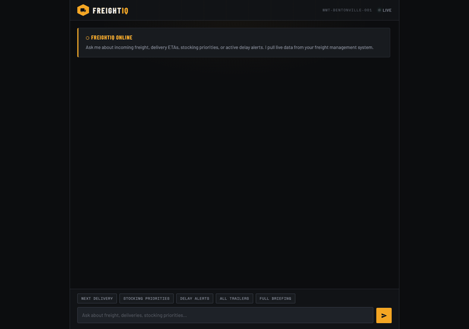

Senior Software Engineer building store systems that leverage supply chain data, exploring the intersection of artificial intelligence, leadership, and operational excellence in retail logistics.
I am a Senior Software Engineer at Walmart, where I design and maintain distributed microservices that power store operations across 4,700 locations. My work on the Stores and Supply Chain technology team sits at the crossroads of software architecture, retail logistics, and AI integration.
I hold a Master's in Computer Science from UMBC and am currently pursuing a Master's in AI and Data Analytics at Indiana Wesleyan University. Previously, I built risk analytics platforms at Wells Fargo and conducted published IoT security research for the US Army Research Laboratory.
I believe that the best leaders are those who continuously learn, adapt, and use their unique gifts to serve others. This portfolio showcases the work I have done exploring AI/ML concepts, leadership, and their real-world applications in retail technology.
I bring a rare combination of hands-on software engineering at scale and a deep understanding of retail operations.
As a Senior Software Engineer at Walmart, I architect distributed microservices that process over 15 million events daily, powering store operations for 500,000+ associates across 4,700 stores. My work on the Store Freight Delivery system, AI-powered assistant integrations (MCP servers for Ask SAM), and high-throughput event-driven architectures means I don't just study AI/ML in theory — I build and deploy the systems that bring it to life on the store floor.
With a Master's in Computer Science (3.97 GPA) from UMBC, prior experience building risk analytics platforms at Wells Fargo, and published research in IoT security (IEEE Mobisec 2023), I combine technical depth with the ability to lead cross-functional teams and translate complex engineering solutions into business impact. I am now pursuing a Master's in AI and Data Analytics at Indiana Wesleyan University to deepen my expertise in machine learning, leadership, and responsible AI adoption.
What sets me apart: I sit at the intersection of engineering, operations, and leadership. I can design the architecture, write the code, understand the supply chain problem it solves, and lead the team through adoption. This end-to-end perspective is what I bring to every project, conversation, and collaboration.
Java Spring Boot, Kafka, Kubernetes, microservices at scale
Azure, CosmosDB, CI/CD pipelines, Docker, Helm
Agentic AI, MCP servers, ML/DL concepts, Python, Spark
Freight delivery systems, store operations, inventory optimization
Adaptive learning, cross-team collaboration, stakeholder communication
This artifact is an interactive, visually rich timeline that traces the evolution of AI and machine learning from Alan Turing's foundational 1950 paper through the current era of large language models and multimodal reasoning systems.
The timeline covers 20 key milestones organized into color-coded eras: Early AI (1950s–1970s), AI Winters, Revival periods, the Deep Learning breakthrough era (2011–2017), and the LLM era (2020–present). Each entry includes the year, event name, detailed description, and key figures or organizations involved. The timeline features scroll-triggered animations, responsive design, and an alternating left-right layout for visual engagement.
To research and present the historical development of AI/ML in a format that is both educational and visually compelling, demonstrating the ability to synthesize complex technical history into an accessible resource.
I studied three source types recommended by the course: a narrative video documentary on AI history, an IEEE scholarly article on AI evolution, and interactive data visualizations from Our World in Data. I then designed and coded a custom HTML/CSS/JavaScript timeline with era-based color coding, hover interactions, and intersection observer animations for a dynamic scroll experience.
HTML5, CSS3 (gradients, animations, media queries), JavaScript (Intersection Observer API), Claude AI (research assistance), Google Fonts.
Unique Value: This timeline is not a generic copy-paste exercise. It is a hand-crafted, interactive web resource that demonstrates both research depth and front-end development capability, skills that set apart a supply chain professional who can also build digital tools.
Relevance: Understanding where AI came from is essential for anyone leading its adoption. This resource can serve as a reference for colleagues, stakeholders, or team training sessions to contextualize why AI technologies work the way they do today.
Putchuon. (2024, May 30). The entire history of artificial intelligence (Last 100 years) [Video]. YouTube. https://www.youtube.com/watch?v=mSd9nmPM7Vg
IEEE Computer Society. (n.d.). The evolution of AI: From foundations to future prospects. https://www.computer.org/publications/tech-news/research/evolution-of-ai
Bender, E., & Our World in Data. (n.d.). A brief history of artificial intelligence. https://ourworldindata.org/brief-history-of-ai
This artifact is a fully functional proof-of-concept chatbot, FreightIQ, that I designed and built to solve a real pain point in retail freight management: store leaders needing fast, conversational access to freight status, stocking priorities, and delay alerts without navigating multiple systems.

FreightIQ is a Python-based agentic chatbot powered by Claude AI. It features a real-time chat interface where store leaders can ask natural-language questions about incoming freight, delivery ETAs, stocking priorities, and active delay alerts. The system uses a mock freight data server to simulate live data, and the Claude-powered agent server interprets user queries, calls the appropriate API tools, and returns structured, actionable responses. Quick-action chips allow one-tap access to common queries like "Next Delivery," "Stocking Priorities," "Delay Alerts," "All Trailers," and "Full Briefing."
To apply design thinking methodology and generative AI tools to develop a practical, working prototype that addresses a real operational challenge in retail freight management.
I followed a design thinking process: empathize (identify store leaders' frustration with fragmented freight data across multiple systems), define (the need for a single conversational interface), ideate (sketch chatbot features and data model), prototype (build a full-stack application with a Python agent server, mock freight API, and responsive HTML/CSS/JS frontend), and test (verify responses across delivery queries, stocking priorities, delay alerts, trailer lookups, and full briefing scenarios with automated tests).
Python, Claude AI (Anthropic API with tool use), Flask, HTML5, CSS3, JavaScript, Pytest, Design Thinking methodology.
Unique Value: This artifact goes beyond theoretical understanding. It is a working, end-to-end AI application with a real agent architecture, API integration, and automated test coverage. The chatbot directly addresses a daily challenge I observe at Walmart, demonstrating practical AI application in supply chain.
Relevance: For any employer in retail or logistics, this demonstrates the ability to translate AI knowledge into tangible, deployable solutions. The combination of agentic AI design, full-stack development, and supply chain domain knowledge shows initiative and applied technical capability.